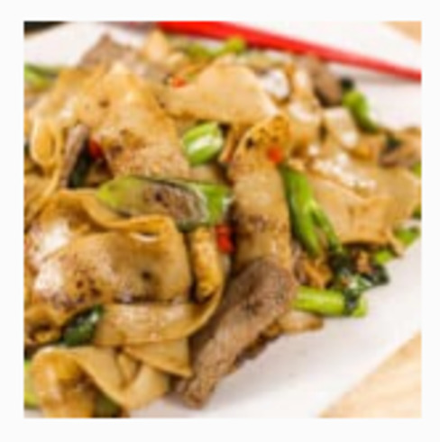

Pad See Ew
Originally from: Hot Thai Kitchen

Ingredients
Main:
- 170g (6oz) protein of your choice, thinly sliced (see note)
- 1 Tbsp soy sauce for marinating meat, omit if using shrimp or tofu
- 3-4 Tbsp vegetable oil
- 4 cloves garlic, chopped
- 2 eggs
- 4-6 stalks Chinese broccoli (use 6 stalks if they're small)
- 1 lb (450g) fresh wide rice noodles, store bought (see note) or make your own
- 4 tsp sugar
- Ground white pepper, to taste
Sauce
- 2 Tbsp oyster sauce
- 1 Tbsp soy sauce
- 1 1/2 tsp fish sauce
- 1 1/2 tsp Golden Mountain sauce (can sub soy)
- 2 tsp Thai black soy sauce
Directions
- Stir meat with soy sauce to marinate.
- Combine all sauce ingredients.
- Heat oil is wok over medium high heat and cook meat until done.
- Consider dividing dish into portions and repeat the following steps to avoid over-crowding
- Sauté garlic until start to color.
- Add egg and scramble.
- Add Broccoli and cook 30 seconds.
- Add noodles, sauce and sugar. Turn heat to high and stir, coating everything in sauce.
- Spread noodles out across pan and let cook until some begin to char. Flip and repeat.
- Add protein back into pan and stir.
Notes
-
2021-01-10 - Made with tofu and rice noodle block. Turned out pretty decently - sauce combination needs a little work still. Good noodle texture, pan fried tofu before hand and added near end of cooking, worked out well.
- 2021-01-17 - Tried making again with same noodle and Bok Choy instead of the chinese broccoli and did not turn out great - noodles still tasted fine, but bok choy cooked down too much and made it all clumpy.